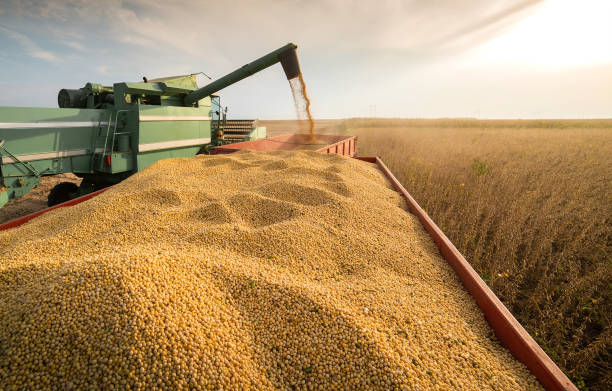
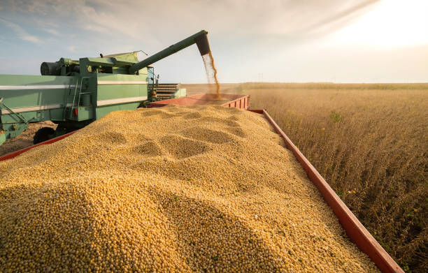

Brasil é líder em produção de soja
O Brasil é o maior produtor de soja do mundo, com uma produção de mais de 120 milhões de toneladas em 2022.
O Brasil é o maior produtor de soja do mundo, com uma produção de mais de 120 milhões de toneladas em 2022.
O agronegócio brasileiro cresceu 10% em 2022, impulsionado pela alta demanda por produtos agrícolas.
O agronegócio brasileiro é um dos principais setores da economia do país, responsável por mais de 20% do PIB nacional.
A soja é um dos principais produtos do agronegócio brasileiro, com uma produção de mais de 120 milhões de toneladas em 2022.
O milho é outro produto importante do agronegócio brasileiro, com uma produção de mais de 80 milhões de toneladas em 2022.

A cana-de-açúcar é um produto importante do agronegócio brasileiro, com uma produção de mais de 600 milhões de toneladas em 2022.

Entre em contato conosco para saber mais sobre o agronegócio brasileiro.